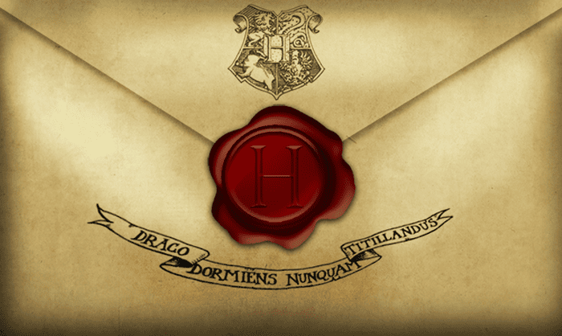

The Hogwarts acceptance letter is sent to wizards and witches residing in Great Britain and Ireland before their first year at Hogwarts. A special quill writes down the name and birth of every magical child as soon as they exhibit signs of magic. This ensures that Hogwarts letters are sent at the appropriate time, including to those who are Muggle-born. The letter consists of a note of acceptance from the Deputy Headmaster or Headmistress of Hogwarts, written in green ink. It is accompanied by a list of required textbooks and materials for the upcoming school year, allowing students to prepare for their exciting journey into the magical world of Hogwarts.